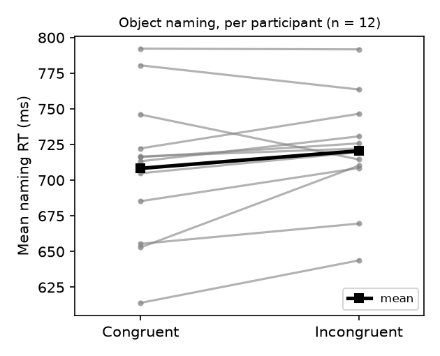

Question. When English speakers name the object in a coloured line drawing, are they faster when the object's name shares its onset with the colour's name (congruent, e.g. a green goose) than when it does not (incongruent)? Prediction tested: congruent mean RT < incongruent mean RT in the object-naming group.
Data and design. Replication data, trial level (d06.sav): 24 participants, 80 experimental items each (40 congruent, 40 incongruent pairings; fillers are not in the file). Task between subjects: 12 object-naming, 12 colour-naming. Only the 12 object-naming participants enter the primary test.
Exclusions (fixed before analysis, as specified in the study design). Of 960 object-naming trials: 47 error trials dropped (4.9%; all negative or placeholder RTs were among these), then 14 trials more than 3 SD from that participant's error-free mean dropped (1.5%); 899 trials kept. No participant excluded: n = 12. The per-participant means I re-derived match the supplied condition means (d02.sav) exactly (max difference 0.0 ms).
Primary test. Two-sided paired t-test on per-participant mean RT, congruent vs incongruent (by subjects, F1); dz = t/√n with a noncentral-t 95% CI.
| Congruent | Incongruent | |
|---|---|---|
| Mean RT (SD), ms | 708.3 (51.6) | 720.6 (38.7) |
Difference (C − I) = −12.3 ms, 95% CI [−26.6, 2.1]; 9 of 12 participants faster on congruent trials. t(11) = −1.88, p = .087; dz = −0.54, 95% CI [−1.14, 0.08].

Checks (not the basis of the conclusion).
Interpretation. The difference is in the predicted direction and of moderate size, but the primary test does not reach p < .05 and the CI for the difference includes zero. Exclusion variants hover at p ≈ .05 on either side, so the result is fragile, not clearly null. The colour-naming group shows an effect of similar size, which does not fit the claimed asymmetry (an effect for object naming only), though that group was not tested by design. With n = 12 the test has little power for an effect of this size.
Conclusion. The claim does not hold on this data: object naming was 12 ms faster for onset-congruent colour-object pairs, but not significantly so (t(11) = −1.88, p = .087).